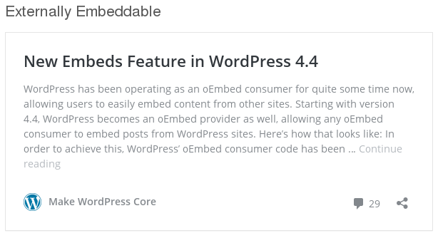
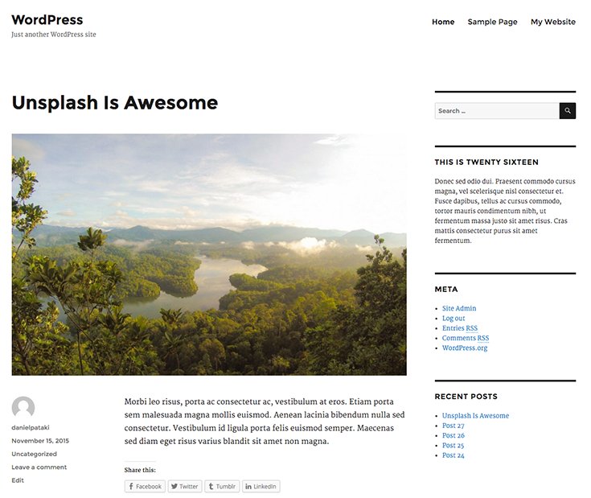
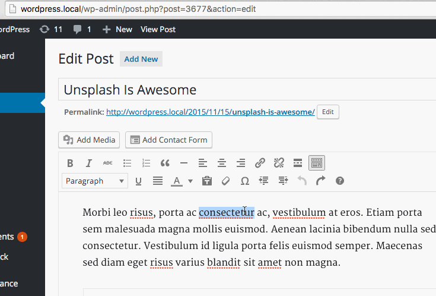

WordPress 4.4
Le novitá e i feature plugin
Daniele Scasciafratte / @Mte90Net
Source: make.wordpress.org/core/2015/11/11/wordpress-4-4-field-guide/, premium.wpmudev.org/blog/obscure-wordpress-features/, premium.wpmudev.org/blog/wordpress-4-4/
WordPress 4.4 Clifford
469 contributor
Daniele Scasciafratte
- Co Founder Codeat - Full Stack Developer
- Mozillian & Mozilla Reps & Participation Leader
- Redattore per il network AndMore, ChimeraRevo, TechEconomy
- Utente Debian Linux dal 2009
- WordPress Core Contributor/Developer/Translator
- Open Source Addicted
- Industria Italiana Software Libero Admin
WordPress e gli oEmbed
WordPress é un Provider per gli oEmbed verso gli altri siti, personalizzabile e disattivabile
Rest API Infrastructure
- WP-API plugin in merging in due parti (Infrastructure e Endpoint)
- Infrastructure permette di realizzare le proprie API
- Il plugin se presente carica solo gli Endpoint
- Gli endpoint sono le varie url: /users, /posts ecc
- Nella 4.4 é presente la prima parte
Term Meta per le Tassonomia
- Nuova tabella nel db
wp_termmeta - Possibilitá di creare dei custom field
- Preparatevi al supporto in ACF, CMB2, ecc
wp_title é deprecato
- Il titolo verrá generato automaticamente in
get_header() - Retrocompatibilitá garantita con avviso
- Potete scordarvi
wp_title
Twenty Sixteen
Immagini Responsive
I temi moderni lo fanno giá di base...
ridimensionano solo l'immagine!
Il nuovo standard HTML5 fá scaricare al browser
l'immagine della misura piú adatta
Esempio di codice HTML

single-{post_type}-{post_name}.php
single-page-{chi-sono}.php
post_name é lo slug
Incolla e diventa un link!
Feature Plugin
make.wordpress.org/core/features-as-plugins/Shortcake (Shortcode UI)
2FA - Two-Factor
In order to better combat brute force login attempts and stolen passwords, WordPress needs a standardized-yet-extensible core system for providing opt-in Two-Factor Authentication to users.wordpress.org/plugins/two-factor/
We are aiming to be ready to merge in to Core in February of 2016, during the 4.5 release cycle.
WordPress Contributor Day
Milano 7 Novembre 2015
Traduzioni, Sviluppo, Accessibilitá, Mobile, Supporto e Community